Review 001: Dungeon Gallery, Stage 1 blockout (v2)
19 Nov 2026. Real Roblox Studio viewport captures of a plain-coloured blockout (no final models, textures or lighting yet) of one underground gothic chamber, compared with the original reference. Studio screenshots are unedited originals (the small cube in the top-right corner is Studio's view widget). Only the side-by-side and overlay images are composites. Status: awaiting the owner's approval of the layout.
What to compare: composition and camera angle, architectural silhouettes, proportions and scale, depth and perspective, geometry. Colour, materials and lighting are not built yet (Stages 3-4).
Original reference image (owner, made with ChatGPT). The target to recreate.

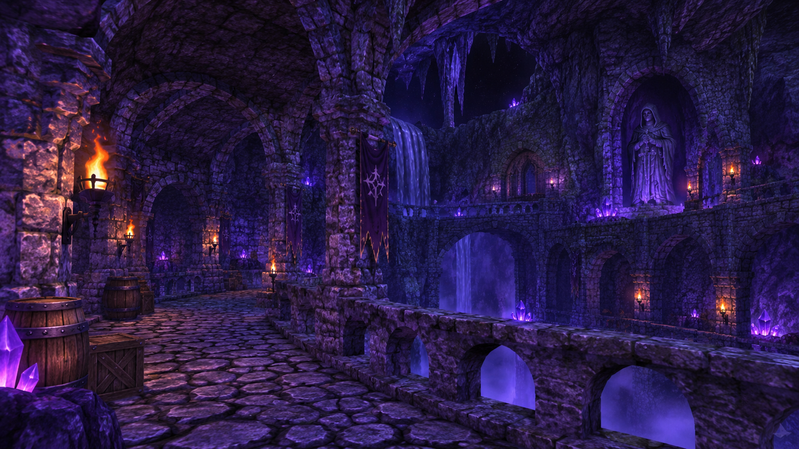
Side by side: reference (left) and the Roblox Studio blockout from the same camera (right). The build screenshot is cropped to 16:9 and scaled to the reference size for this comparison only.

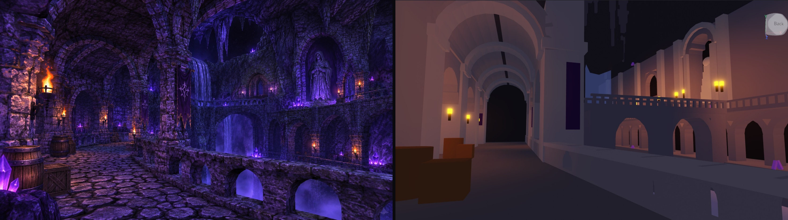
50% transparency overlay of the reference and the Studio blockout (same camera). Shows how the shapes line up.

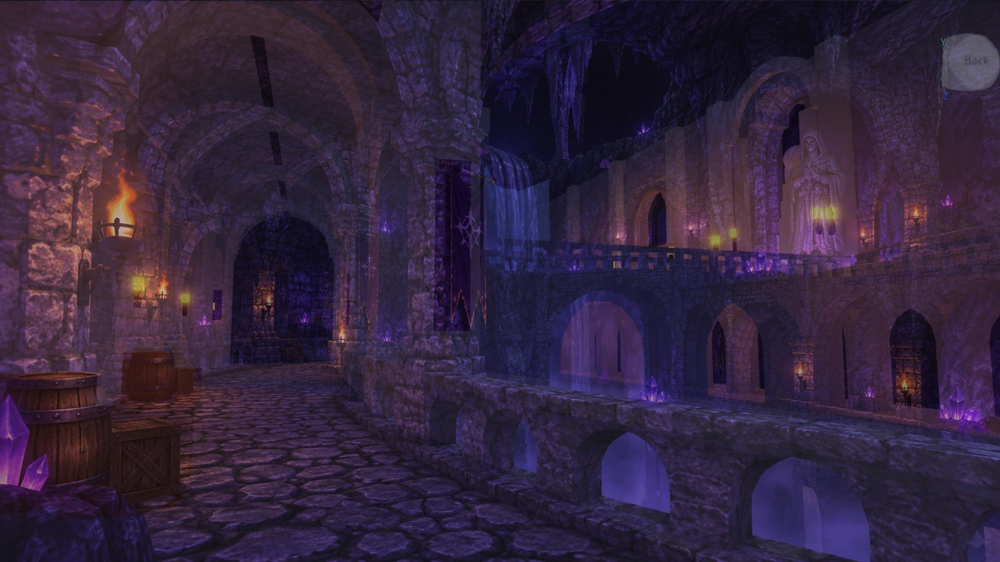
Main Studio view from the reference camera (eye 4.7 studs, 80 deg horizontal lens).

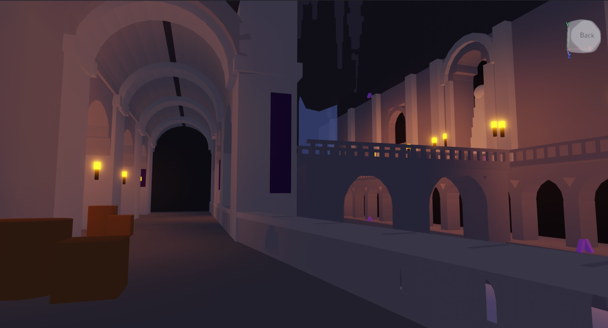
Numbered layout map. A diagram drawn from the build coordinates, NOT a screenshot. Top = deeper into the dungeon.

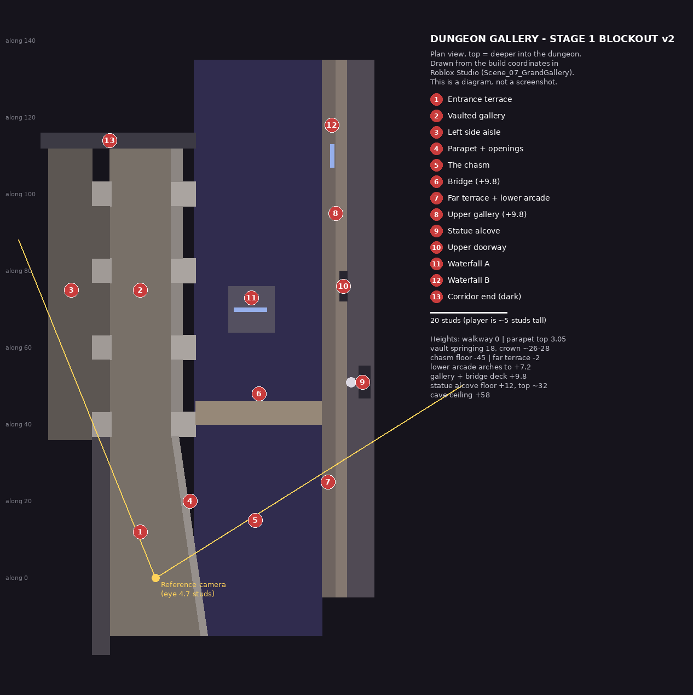
Overhead plan, roof hidden (everything above +12 studs). Top = far wall, bottom = walkway, right = entrance terrace. Lavender sheet = temporary mist stand-in over the chasm.

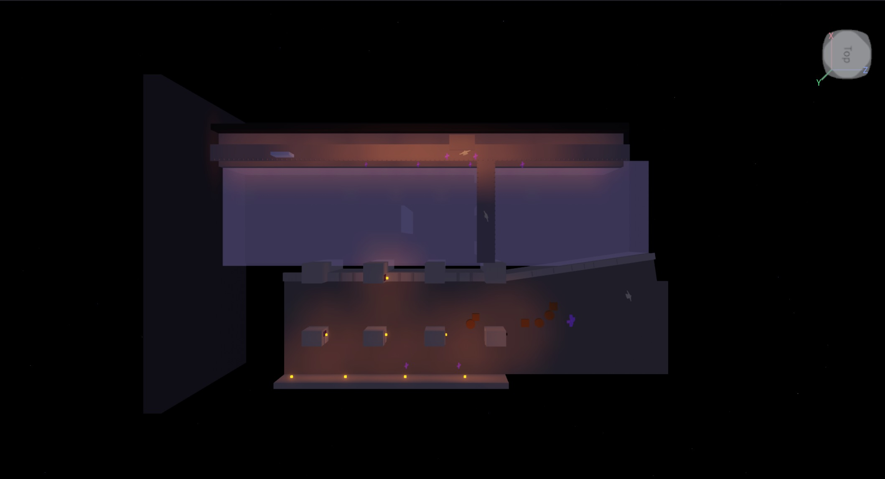
Overhead oblique view of the whole chamber, everything above +26 studs hidden.

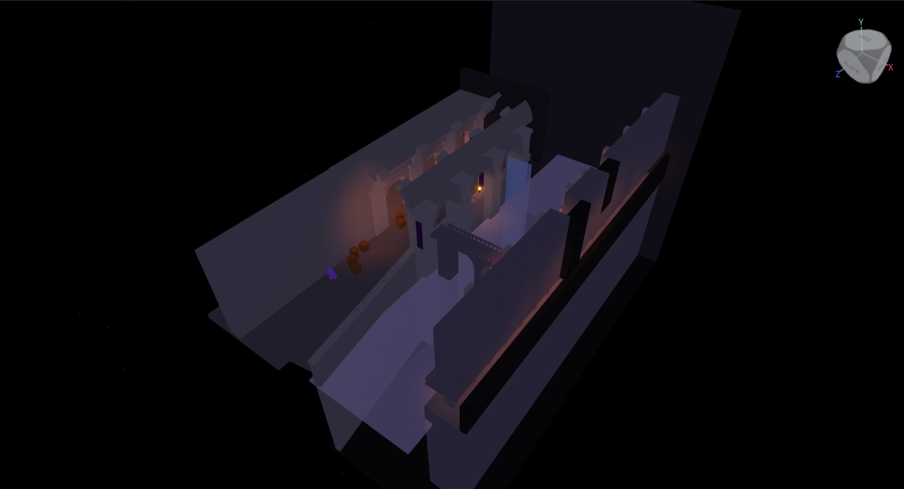
Player scale: the game's Knight model (4.7 studs tall) on the walkway.

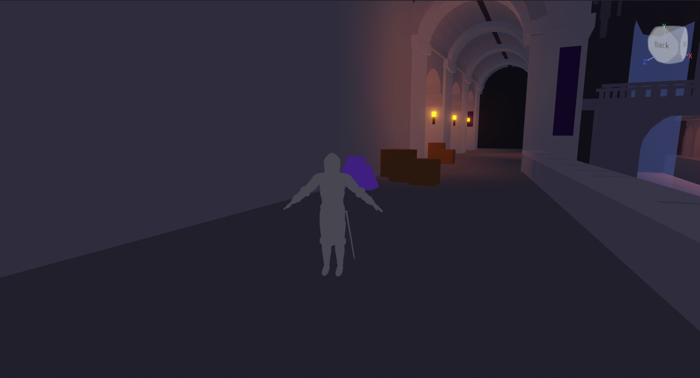
Player scale: Knight on the bridge, seen from the walkway.

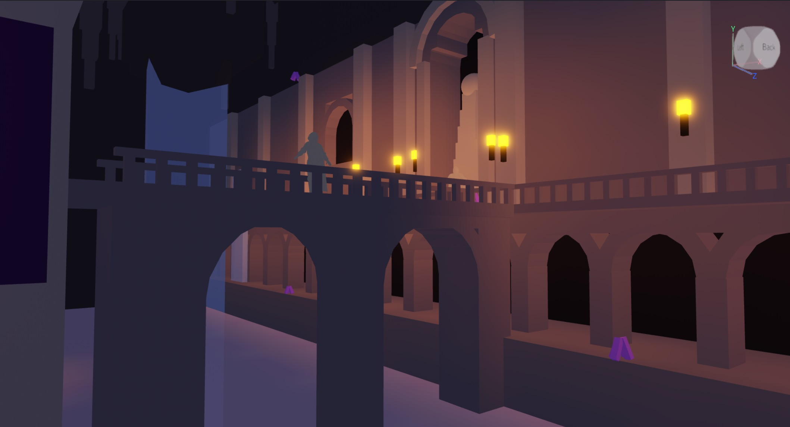
Player-height view down the vaulted gallery.

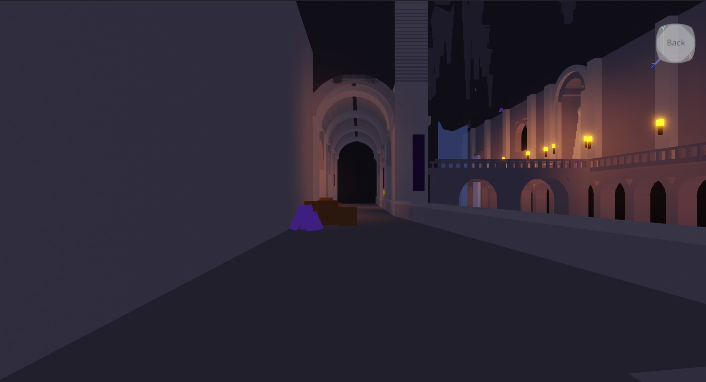
From inside the gallery, through the columns to the far wall.

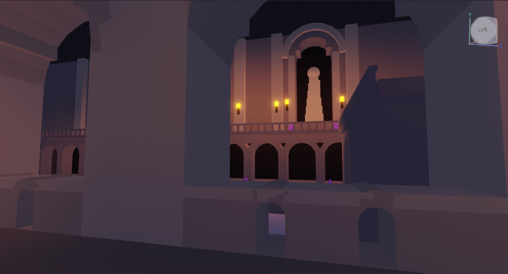
From the far upper balcony looking back at the walkway, parapet and bridge.

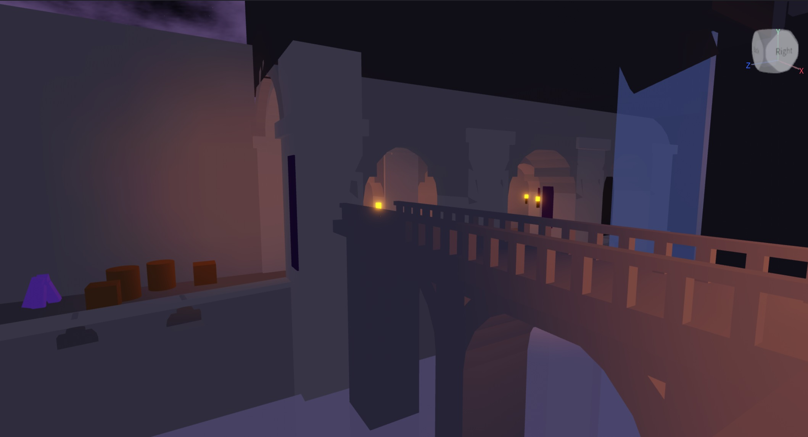
On the bridge looking toward waterfall A and the far gallery.

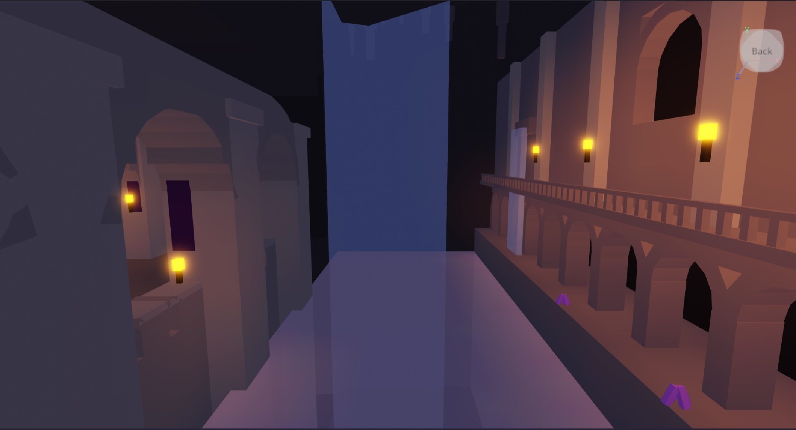
Narrow-lens end-on view showing the height layers (sky visible because the chamber ends are open).

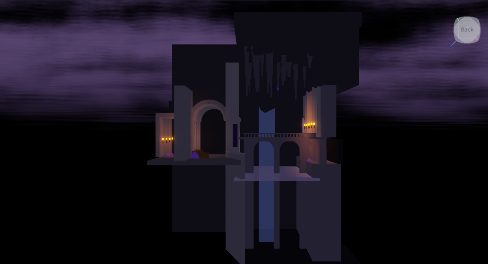


Close-up of the heavy parapet and its arched openings.

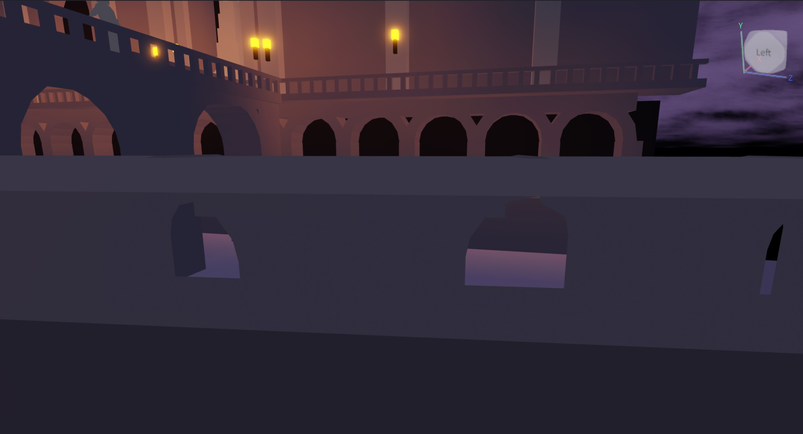

Direct image URLs
- 00_Reference_Original.png
https://capcuta649-byte.github.io/LABYRINTH-Visual-Gallery/reviews/001-Dungeon-Layout/images/00_Reference_Original.png - 15_Side_By_Side_Reference_Left_Build_Right.jpg
https://capcuta649-byte.github.io/LABYRINTH-Visual-Gallery/reviews/001-Dungeon-Layout/images/15_Side_By_Side_Reference_Left_Build_Right.jpg - 16_Overlay_50pct_Reference_And_Build.jpg
https://capcuta649-byte.github.io/LABYRINTH-Visual-Gallery/reviews/001-Dungeon-Layout/images/16_Overlay_50pct_Reference_And_Build.jpg - 01_Main_View_Same_Camera_As_Reference.jpg
https://capcuta649-byte.github.io/LABYRINTH-Visual-Gallery/reviews/001-Dungeon-Layout/images/01_Main_View_Same_Camera_As_Reference.jpg - 17_Room_Map_Numbered_Diagram.png
https://capcuta649-byte.github.io/LABYRINTH-Visual-Gallery/reviews/001-Dungeon-Layout/images/17_Room_Map_Numbered_Diagram.png - 02_Overhead_Plan_Roof_Hidden.jpg
https://capcuta649-byte.github.io/LABYRINTH-Visual-Gallery/reviews/001-Dungeon-Layout/images/02_Overhead_Plan_Roof_Hidden.jpg - 03_Overhead_Oblique_Roof_Hidden.jpg
https://capcuta649-byte.github.io/LABYRINTH-Visual-Gallery/reviews/001-Dungeon-Layout/images/03_Overhead_Oblique_Roof_Hidden.jpg - 11_Player_Scale_On_Walkway.jpg
https://capcuta649-byte.github.io/LABYRINTH-Visual-Gallery/reviews/001-Dungeon-Layout/images/11_Player_Scale_On_Walkway.jpg - 12_Player_Scale_On_Bridge_And_Balcony.jpg
https://capcuta649-byte.github.io/LABYRINTH-Visual-Gallery/reviews/001-Dungeon-Layout/images/12_Player_Scale_On_Bridge_And_Balcony.jpg - 04_Walkway_Player_View_Down_Corridor.jpg
https://capcuta649-byte.github.io/LABYRINTH-Visual-Gallery/reviews/001-Dungeon-Layout/images/04_Walkway_Player_View_Down_Corridor.jpg - 05_Vaulted_Gallery_Looking_Into_Chasm.jpg
https://capcuta649-byte.github.io/LABYRINTH-Visual-Gallery/reviews/001-Dungeon-Layout/images/05_Vaulted_Gallery_Looking_Into_Chasm.jpg - 06_From_Far_Balcony_Looking_Back.jpg
https://capcuta649-byte.github.io/LABYRINTH-Visual-Gallery/reviews/001-Dungeon-Layout/images/06_From_Far_Balcony_Looking_Back.jpg - 07_On_Bridge_Toward_Waterfall.jpg
https://capcuta649-byte.github.io/LABYRINTH-Visual-Gallery/reviews/001-Dungeon-Layout/images/07_On_Bridge_Toward_Waterfall.jpg - 08_Section_View_End_On.jpg
https://capcuta649-byte.github.io/LABYRINTH-Visual-Gallery/reviews/001-Dungeon-Layout/images/08_Section_View_End_On.jpg - 09_Statue_Alcove.jpg
https://capcuta649-byte.github.io/LABYRINTH-Visual-Gallery/reviews/001-Dungeon-Layout/images/09_Statue_Alcove.jpg - 10_Left_Side_Aisle.jpg
https://capcuta649-byte.github.io/LABYRINTH-Visual-Gallery/reviews/001-Dungeon-Layout/images/10_Left_Side_Aisle.jpg - 13_Parapet_Openings_Close_Up.jpg
https://capcuta649-byte.github.io/LABYRINTH-Visual-Gallery/reviews/001-Dungeon-Layout/images/13_Parapet_Openings_Close_Up.jpg - 14_Corridor_End_Incomplete.jpg
https://capcuta649-byte.github.io/LABYRINTH-Visual-Gallery/reviews/001-Dungeon-Layout/images/14_Corridor_End_Incomplete.jpg